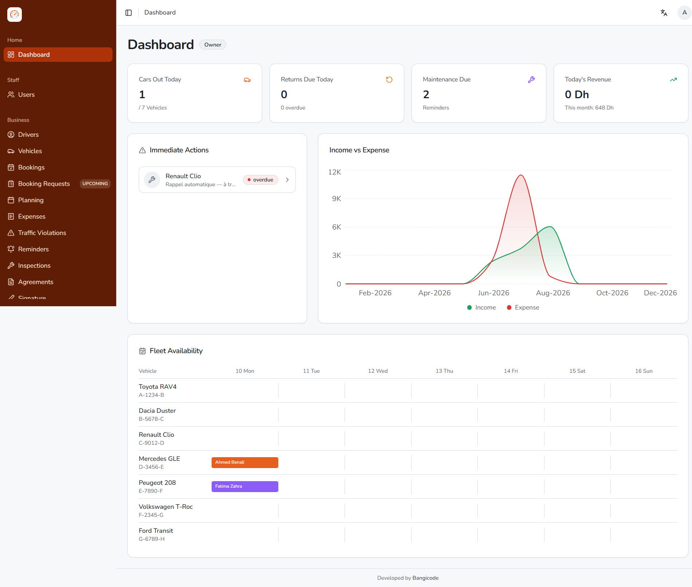
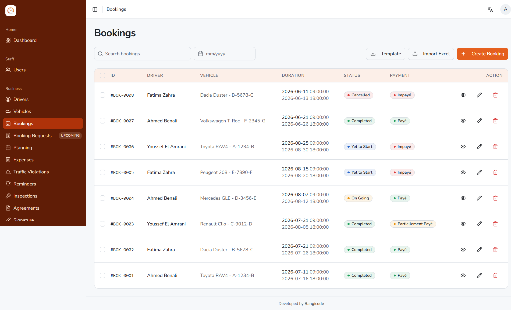
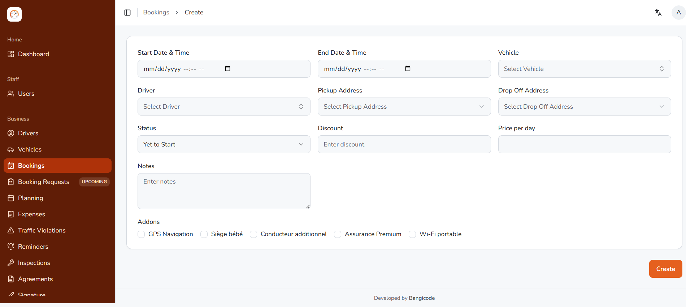
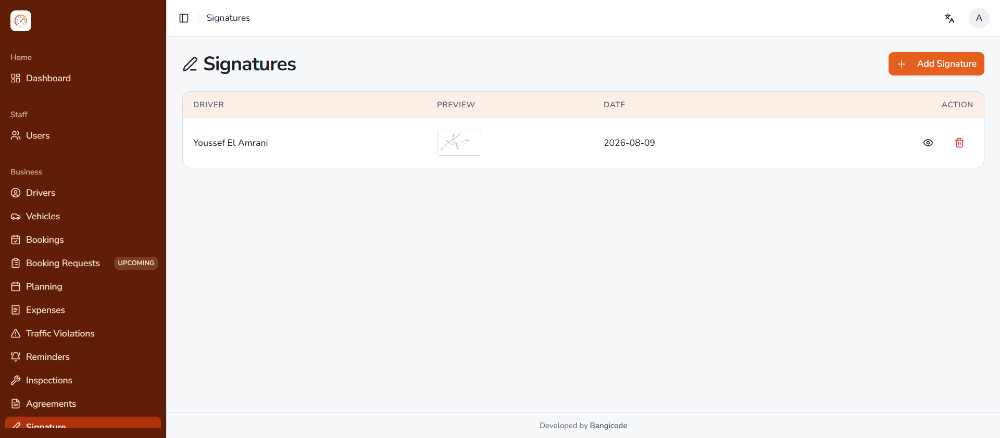
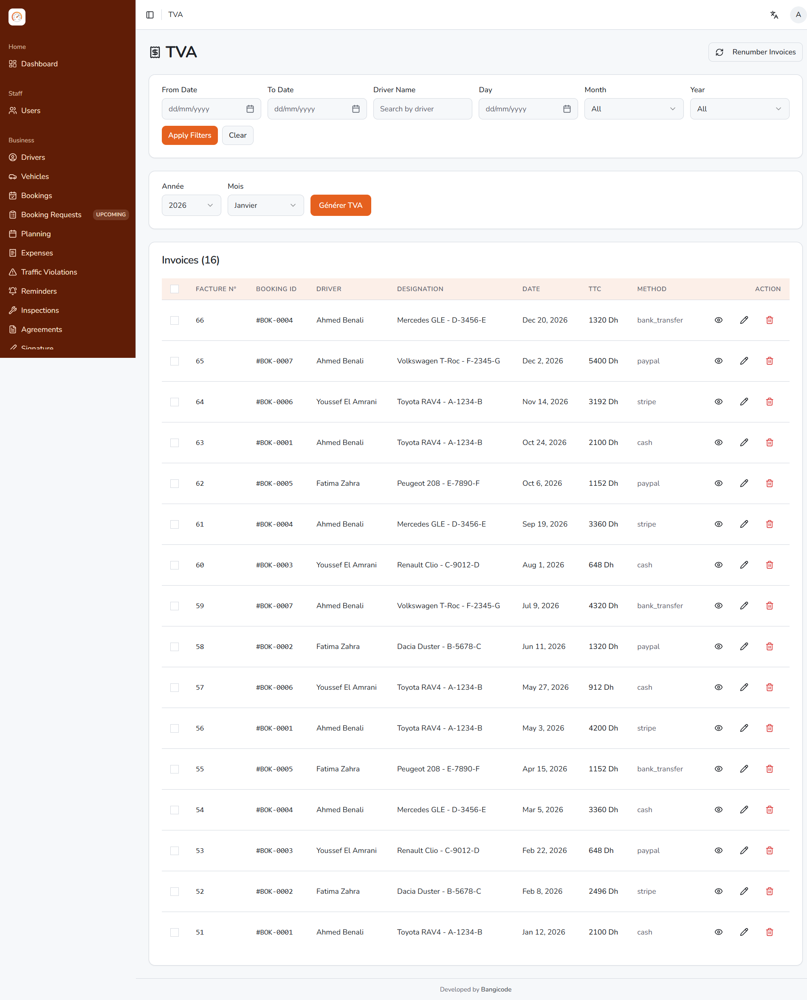
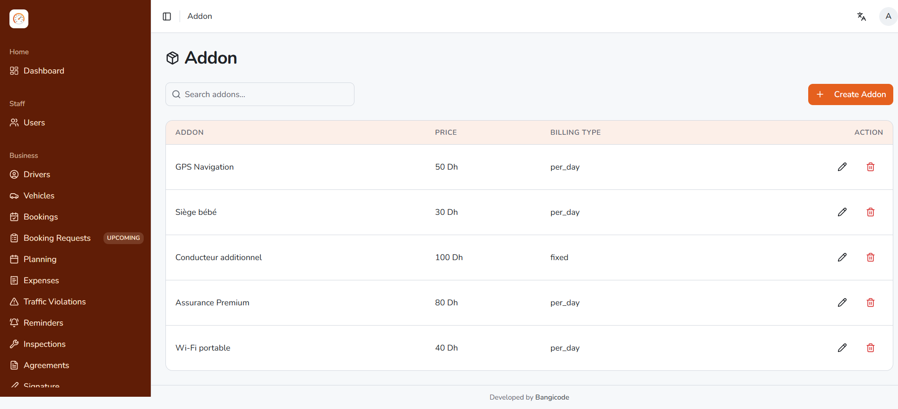
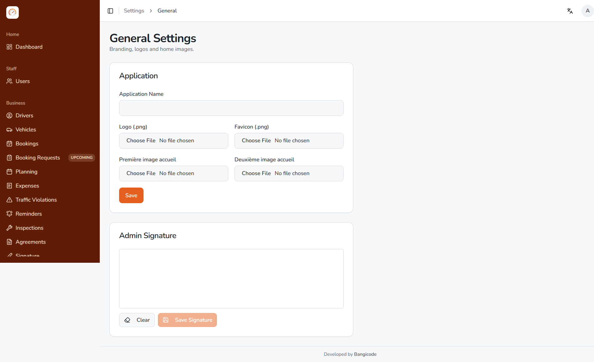

<meta charset="utf-8">
<title>DriveDesk — Salesperson's Handbook</title>
<link rel="stylesheet" href="_shared.css">

<!-- ══════════════════════════════ COVER ══════════════════════════════ -->
<section class="cover">
  <div>
    <div class="kicker">Internal · Sales enablement</div>
    <h1>The DriveDesk<br><em>Salesperson's</em><br>Handbook</h1>
    <div class="sub">
      Everything you need to understand the product, run a confident demo,
      answer the hard questions — and know exactly where the line is
      between what we <em>have</em> and what we <em>don't</em>.
    </div>
  </div>
  <div class="meta">
    <b>Written for:</b> a salesperson with no technical background<br>
    <b>Product:</b> DriveDesk — car rental agency management software · <b>Demo:</b> drivedesk.ma<br>
    <b>Version:</b> 1.0 · <b>Date:</b> 10 August 2026 · <b>Built by:</b> Bangicode
  </div>
</section>

<!-- ══════════════════════════════ HOW TO USE ══════════════════════════════ -->
<section class="page">
  <h2><span class="num">00</span>Start here</h2>
  <p class="deck-sub">Ten minutes now saves you a lost deal later.</p>

  <p class="lead">
    You do not need to understand how DriveDesk is built. You need to understand
    what an agency owner's day looks like, which of their problems this software
    removes, and which ones it doesn't. That's what this handbook is for.
  </p>

  <h3>Read in this order</h3>
  <ol class="toc">
    <li><b>§1 What DriveDesk is</b> — three versions of the pitch: 10 seconds, 60 seconds, 3 minutes.</li>
    <li><b>§2 Who to sell to</b> — the right prospect, the qualifying questions, and who to walk away from.</li>
    <li><b>§3 The vocabulary</b> — the fifteen words you must be able to use naturally. Learn these <em class="t">before</em> your first call.</li>
    <li><b>§4 The product, screen by screen</b> — what each screen does, and the sentence to say when you show it.</li>
    <li><b>§5 One rental, end to end</b> — the story that makes the whole thing click.</li>
    <li><b>§6 The six things nobody else has</b> — your real differentiators.</li>
    <li><b>§7 The demo script</b> — a tested 25-minute run.</li>
    <li><b>§8 Objection handling</b> — the twelve you will actually hear.</li>
    <li><b>§9 What you must NOT promise</b> — <em class="t">the most important section in this document.</em></li>
    <li><b>§10 After they say yes</b> — what onboarding actually involves.</li>
    <li><b>§11 Cheat sheet</b> — one page, print it, keep it in your bag.</li>
  </ol>

  <h3>How to read the coloured boxes</h3>
  <div class="box say">
    <span class="lbl">Say this</span>
    <p>A line you can use almost word for word in front of a prospect.</p>
  </div>
  <div class="box care">
    <span class="lbl">Careful</span>
    <p>True, but easy to overstate. Phrase it the way this box phrases it.</p>
  </div>
  <div class="box stop">
    <span class="lbl">Do not promise</span>
    <p>Not built. Saying it exists will cost us the client at implementation. There is no version of this that ends well.</p>
  </div>

  <div class="box">
    <span class="lbl">The one rule</span>
    <p>
      <strong>If you are not sure whether DriveDesk does something, say
      “Good question — let me confirm that and come back to you today.”</strong>
      A one-day delay costs nothing. A wrong yes costs the account, and it costs
      it late, after the client has already paid and moved their data in.
    </p>
  </div>
</section>

<!-- ══════════════════════════════ §1 WHAT IT IS ══════════════════════════════ -->
<section class="page">
  <h2><span class="num">01</span>What DriveDesk is</h2>
  <p class="deck-sub">Three versions. Learn all three.</p>

  <h3>The 10-second version</h3>
  <div class="box say">
    <p>DriveDesk is the software a car rental agency uses to run everything —
      the cars, the bookings, the contracts, the invoices — from one screen instead
      of five notebooks and a WhatsApp group.</p>
  </div>

  <h3>The 60-second version</h3>
  <div class="box say">
    <p>Most rental agencies here run on paper contracts, an Excel file for the
      planning, a WhatsApp group for who has which car, and an accountant who
      rebuilds the VAT from a shoebox of receipts every month. It works until it
      doesn't — a car gets double-booked, an insurance renewal is missed, a traffic
      fine arrives four months later and nobody can prove who was driving.
      DriveDesk replaces all of that with one system: your fleet, your customers,
      your bookings on a visual planning board, your rental contracts signed on
      screen, and your VAT invoices generated automatically and numbered in
      sequence. It's in the browser, so it works on the office computer and on
      the phone at the counter. It runs on your own web address with your own
      logo, and it speaks French, Arabic and English.</p>
  </div>

  <h3>The 3-minute version — the four problems it solves</h3>
  <table>
    <tr>
      <th style="width:34%">The daily pain</th>
      <th>What DriveDesk does about it</th>
    </tr>
    <tr>
      <td><strong>“Where is that car and when is it back?”</strong><br>
        <span class="small">Answered today by calling someone.</span></td>
      <td>A planning board with one row per vehicle and one bar per rental. One
        glance answers it. The dashboard also shows cars out today, returns due
        today, and how many are overdue.</td>
    </tr>
    <tr>
      <td><strong>“The contract is a Word file we edit every time.”</strong><br>
        <span class="small">Fields get missed, terms drift, signatures are on paper.</span></td>
      <td>A branded contract generated from the booking, with the agency's legal
        identifiers, both drivers' details, the vehicle, the full terms — and the
        customer's signature captured on screen with a finger.</td>
    </tr>
    <tr>
      <td><strong>“The VAT takes three days a month.”</strong><br>
        <span class="small">Invoices are numbered by hand; gaps and duplicates happen.</span></td>
      <td>Every payment produces a properly numbered VAT invoice with the ICE, RC
        and IF on it. Download one as PDF, or select fifty and download them as a
        ZIP. A yearly report shows VAT by month, by client and by vehicle.</td>
    </tr>
    <tr>
      <td><strong>“A fine arrived. Whose was it?”</strong><br>
        <span class="small">Four months later, with nothing to go on but a plate and a timestamp.</span></td>
      <td>Enter the plate and the exact time from the notice. DriveDesk finds the
        rental that was running at that minute and names the renter — then lets
        your staff confirm it before anything is charged.</td>
    </tr>
  </table>

  <h3>What it is <em class="t">not</em></h3>
  <ul>
    <li>It is <strong>not</strong> accounting software. It produces the VAT invoices and the
      report; it does not replace the accountant or file the return.</li>
    <li>It is <strong>not</strong> a GPS tracking system. It knows where a car is
      <em>booked</em>, not where it physically is.</li>
    <li>It is <strong>not</strong> a mobile app you download from the App Store. It's a
      website that works properly on a phone.</li>
    <li>It is <strong>not</strong> a marketplace. It doesn't bring the agency customers;
      it manages the customers they already have.</li>
  </ul>
</section>

<!-- ══════════════════════════════ §2 WHO TO SELL TO ══════════════════════════════ -->
<section class="page">
  <h2><span class="num">02</span>Who to sell to</h2>
  <p class="deck-sub">The right prospect closes in two meetings. The wrong one closes never.</p>

  <h3>The ideal prospect</h3>
  <table>
    <tr><th style="width:30%">Signal</th><th>Why it matters</th></tr>
    <tr><td><strong>5 to 60 vehicles</strong></td>
      <td>Below 5, a notebook genuinely still works and they won't pay. Above 60,
        they may already have something, and our planning screens are not yet
        tuned for very large fleets.</td></tr>
    <tr><td><strong>Issues VAT invoices</strong></td>
      <td>They have an ICE, they invoice companies, the accountant chases them
        every month. This is our strongest single hook.</td></tr>
    <tr><td><strong>Rents to businesses, not just tourists</strong></td>
      <td>B2B rentals mean contracts, invoices, longer durations, and fines that
        arrive months later — everything we're good at.</td></tr>
    <tr><td><strong>More than one person touches the bookings</strong></td>
      <td>An owner plus two counter staff. That's where paper breaks and where our
        roles and permissions earn their keep.</td></tr>
    <tr><td><strong>Has been burnt</strong></td>
      <td>A double-booking, an unrecovered fine, an expired insurance, a missed
        <em>contrôle technique</em>. Ask about it early — it becomes the whole pitch.</td></tr>
  </table>

  <h3>Six questions that qualify in one phone call</h3>
  <ol>
    <li><em class="t">“How many cars do you have out right now?”</em> — if they have to
      check, that's the pitch.</li>
    <li><em class="t">“How do you know which car is free next Tuesday?”</em> — listen for
      Excel, a whiteboard, or “I know it in my head”.</li>
    <li><em class="t">“Who writes the contract when a customer walks in?”</em> — listen for
      Word, a printed pad, or “we fill it by hand”.</li>
    <li><em class="t">“How long does the monthly VAT take you?”</em> — anything over half a
      day is a number you can quote back at them all the way to signature.</li>
    <li><em class="t">“What happens when a fine arrives three months later?”</em> —
      most will laugh. That laugh is the sale.</li>
    <li><em class="t">“Who else besides you needs to log in?”</em> — tells you the size of the
      deal and whether roles matter.</li>
  </ol>

  <h3>Walk away — or set expectations very carefully — if…</h3>
  <ul>
    <li><strong>They want customers to pay online by card on the website.</strong>
      We do not have that. See §9. This is the number one reason a deal dies late.</li>
    <li><strong>They want GPS tracking or telematics.</strong> Not our product.</li>
    <li><strong>They want a branded iPhone/Android app.</strong> We have a responsive
      website, not a store app.</li>
    <li><strong>They run several separate branches and want each branch's fleet and
      staff separated inside one account.</strong> Not built. See §9.</li>
    <li><strong>They want to connect it to their existing accounting package
      automatically.</strong> There is no integration API.</li>
  </ul>

  <div class="box care">
    <span class="lbl">Careful</span>
    <p>“No online payments” is not automatically a dead deal. Most small
      Moroccan agencies take cash and bank transfer at the counter and have never
      taken a card online. Ask: <em>“Today, how do your customers actually pay
      you?”</em> If the honest answer is cash and virement, this is a non-issue —
      and DriveDesk records both, with the legal cash ceiling handled for them.</p>
  </div>
</section>

<!-- ══════════════════════════════ §3 VOCABULARY ══════════════════════════════ -->
<section class="page">
  <h2><span class="num">03</span>The vocabulary</h2>
  <p class="deck-sub">If you fumble these words, the owner stops believing you understand their business.</p>

  <h3>Moroccan business &amp; tax terms</h3>
  <table>
    <tr><th style="width:20%">Term</th><th style="width:32%">What it means</th><th>Where it shows up in DriveDesk</th></tr>
    <tr><td><strong>TVA</strong></td>
      <td>Value Added Tax. The standard rate in Morocco is <strong>20%</strong>.</td>
      <td>Its own menu section. Every invoice shows HT, TVA and TTC. There's a full yearly TVA report.</td></tr>
    <tr><td><strong>HT</strong><br><span class="small">hors taxes</span></td>
      <td>The price <em>before</em> VAT.</td>
      <td>Shown on every booking and invoice as “Total Amount (HT)”.</td></tr>
    <tr><td><strong>TTC</strong><br><span class="small">toutes taxes comprises</span></td>
      <td>The price <em>including</em> VAT. What the customer actually pays.</td>
      <td>“Due Amount (TTC)”. The TVA report totals both.</td></tr>
    <tr><td><strong>ICE</strong></td>
      <td>Identifiant Commun de l'Entreprise — the company identifier that must
        appear on a legal invoice.</td>
      <td>Company Settings, and printed on every invoice and contract.</td></tr>
    <tr><td><strong>RC</strong></td>
      <td>Registre de Commerce — the trade register number.</td>
      <td>Same as above.</td></tr>
    <tr><td><strong>IF</strong></td>
      <td>Identifiant Fiscal — the tax identifier.</td>
      <td>Same as above.</td></tr>
    <tr><td><strong>Patente</strong></td>
      <td>The local business tax reference.</td>
      <td>Same as above.</td></tr>
    <tr><td><strong>Facture</strong></td>
      <td>Invoice. Must carry a continuous, gap-free number.</td>
      <td>Generated automatically from each payment; sequential numbering is enforced.</td></tr>
    <tr><td><strong>PV / contravention</strong></td>
      <td>A traffic fine notice.</td>
      <td>The Traffic Violations module.</td></tr>
    <tr><td><strong>Contrôle technique</strong></td>
      <td>The mandatory periodic roadworthiness inspection.</td>
      <td>A reminder type, and an inspection type.</td></tr>
    <tr><td><strong>Vidange</strong></td>
      <td>Oil change / service.</td>
      <td>A reminder type.</td></tr>
    <tr><td><strong>Caution</strong></td>
      <td>The security deposit taken against damage.</td>
      <td><em class="t">Appears in the contract terms as a clause. It is not a field you fill in.</em> See §9.</td></tr>
  </table>

  <h3>Software words you'll be asked about</h3>
  <table>
    <tr><th style="width:20%">Word</th><th>Say this if asked</th></tr>
    <tr><td><strong>Cloud / SaaS</strong></td>
      <td>“It lives on a server, not on your office computer. You reach it from any
        browser. If the office PC dies, nothing is lost.”</td></tr>
    <tr><td><strong>White-label</strong></td>
      <td>“It carries your name, your logo, your colours and your own web address.
        Nothing in it says DriveDesk to your customers.”</td></tr>
    <tr><td><strong>Multi-tenant / isolation</strong></td>
      <td>“Every agency gets its own installation and its own database. Your data is
        never mixed with another agency's — not even another of our clients'.”</td></tr>
    <tr><td><strong>Roles &amp; permissions</strong></td>
      <td>“You decide exactly what each employee can see and do. A counter agent can
        create bookings without ever seeing your revenue.”</td></tr>
    <tr><td><strong>Responsive</strong></td>
      <td>“The same website reshapes itself for a phone screen. No separate app to install.”</td></tr>
    <tr><td><strong>RTL</strong></td>
      <td>“Right-to-left. In Arabic the whole interface flips — menus move to the
        right, text reads right to left. It's real Arabic, not a translation bolted on.”</td></tr>
  </table>
</section>

<!-- ══════════════════════════════ §4 PRODUCT TOUR ══════════════════════════════ -->
<section class="page">
  <h2><span class="num">04</span>The product, screen by screen</h2>
  <p class="deck-sub">What it does · what to say · what not to say.</p>

  <p class="lead">
    The menu on the left is grouped the way an agency actually thinks:
    <strong>Home</strong> (the dashboard), <strong>Staff</strong> (your employees),
    <strong>Business</strong> (cars, customers, rentals, contracts),
    <strong>Finance</strong> (money and VAT), and <strong>System setup</strong>
    (the lists you configure once). Walk a prospect down it in that order and the
    story tells itself.
  </p>

  <h3>4.1 &nbsp;Dashboard <span class="tag live">Live</span></h3>
  <figure>
    
    <figcaption><b>Dashboard.</b> Four operational numbers, an immediate-action list,
      a twelve-month income-versus-expense chart, and a seven-day fleet timeline.</figcaption>
  </figure>
  <p>
    The four cards are deliberately <em>operational</em>, not vanity metrics:
    <strong>Cars Out Today</strong> (with the fleet size next to it),
    <strong>Returns Due Today</strong> (with an overdue count),
    <strong>Maintenance Due</strong>, and <strong>Today's Revenue</strong>
    (with the month-to-date underneath).
    Below, <strong>Immediate Actions</strong> lists what is actually late — each
    line clicks straight through to the thing that needs doing.
  </p>
  <div class="box say">
    <p>This is the screen your manager opens with their coffee. In five seconds
      they know how many cars are out, what's coming back today, what's late, and
      what money came in. Nobody has to be phoned.</p>
  </div>

  <h3>4.2 &nbsp;Vehicles — the fleet file <span class="tag live">Live</span></h3>
  <figure>
    
    <figcaption><b>Vehicles.</b> Every car with its own reference number, type,
      plate, registration expiry and engine.</figcaption>
  </figure>
  <p>
    Each vehicle carries: name and model, type (SUV, hatchback, minivan — you
    define the list), licence plate, engine type and number, registration expiry
    date, year of first registration, gearbox, fuel, number of seats, odometer,
    daily rate, options, a photo, a document, and notes. Each gets an automatic
    reference like <code>#VHC-0001</code>. The system refuses two vehicles with
    the same plate.
  </p>
  <div class="box say">
    <p>Every car has a file. Not a line in Excel — a file, with its papers, its
      photo, its rate, and every rental, expense, fine and inspection it has ever
      had attached to it.</p>
  </div>
</section>

<section class="page">
  <h3>4.3 &nbsp;Drivers — the customer file <span class="tag live">Live</span></h3>
  <figure>
    
    <figcaption><b>Drivers.</b> Note the licence number, issue date and expiry
      right in the list — and the ⊘ icon on each row, which is the blacklist.</figcaption>
  </figure>
  <p>
    In DriveDesk the renter is called a <strong>driver</strong>. The file holds
    name, email, phone, gender, date of birth, address, licence number with issue
    and expiry dates, national ID reference, company ICE, notes — and
    <strong>four document uploads</strong>: two for the ID and two for the licence.
    That means the scan of the customer's papers lives on their file, not in a
    drawer.
  </p>
  <h4>The blacklist — worth demoing on its own</h4>
  <p>
    Any customer can be blacklisted with a written reason. From then on, anyone
    trying to create a booking or a contract for them gets a blocking warning.
    A manager <em>can</em> override it — and when they do, the system permanently
    records who overrode it, when, on which contract, and what the reason said at
    that moment. Removing the blacklist later doesn't erase that history.
  </p>
  <div class="box say">
    <p>You know the customer who returned the car with a dent and argued for three
      weeks. Flag him once, with the reason. Now every one of your staff sees it
      before they hand over keys — including the new one who started last Monday
      and has never met him.</p>
  </div>

  <h3>4.4 &nbsp;Bookings — the rental itself <span class="tag live">Live</span></h3>
  <figure>
    
    <figcaption><b>Bookings.</b> Two independent statuses per rental — where the
      car is (Yet to Start / On Going / Completed / Cancelled) and where the money
      is (unpaid / partly paid / paid).</figcaption>
  </figure>
  <p>
    A booking ties a vehicle to a customer for a period, with a pick-up and
    drop-off location, add-ons, a discount, a price and notes. It carries
    <strong>two separate statuses</strong> — the operational one and the payment
    one — which is exactly how an agency thinks. There's also
    <strong>Import Excel</strong> with a downloadable template, for an agency
    moving a year of history across.
  </p>
  <figure>
    
    <figcaption><b>Creating a booking.</b> Dates, vehicle, driver, pick-up and
      drop-off, status, discount, price per day, notes — and the paid add-ons as
      tick boxes.</figcaption>
  </figure>
  <div class="box say">
    <p>Notice the vehicle list only shows cars that are actually free for those
      dates. You physically cannot double-book a car by accident.</p>
  </div>
</section>

<section class="page">
  <h3>4.5 &nbsp;Planning — the board everyone stares at <span class="tag live">Live</span></h3>
  <figure>
    
    <figcaption><b>Planning.</b> One row per vehicle, one bar per rental. Switch
      between day, week, month and year.</figcaption>
  </figure>
  <div class="box say">
    <p>This replaces the whiteboard. One row per car, one bar per rental. A gap is
      a car you could be renting. Your manager will spend more time on this screen
      than any other.</p>
  </div>

  <h3>4.6 &nbsp;Rental agreements &amp; e-signature <span class="tag live">Live</span></h3>
  <figure>
    
    <figcaption><b>The contract.</b> Agency fiscal block top right (IF, RC,
      Patente, ICE), agreement details, driver, vehicle, three signature boxes,
      then the full terms and conditions article by article.</figcaption>
  </figure>
  <p>
    The contract is generated from the data already in the system, so nothing is
    retyped and nothing is missed. It supports a <strong>second driver</strong>,
    carries the agency's own terms and conditions, and prints on the agency's own
    letterhead. It can create the matching booking in the same step.
  </p>
  <h4>The signature</h4>
  <figure>
    
    <figcaption><b>Signatures.</b> Captured on screen, stored on the customer's
      file, and stamped into their contracts.</figcaption>
  </figure>
  <p>
    The customer signs with a finger on a tablet or phone, or with the mouse. The
    signature is stored against their file, so a returning customer's signature is
    already there. Separately, the <strong>owner</strong> draws their own signature
    once in Settings, and it is embedded into every VAT invoice PDF the system
    produces.
  </p>
  <div class="box say">
    <p>Hand them the tablet. They sign with their finger. The contract is complete,
      stored, searchable — and you never lose it, because there's no paper to lose.</p>
  </div>
</section>

<section class="page">
  <h3>4.7 &nbsp;Money: payments, invoices and VAT <span class="tag live">Live</span></h3>
  <figure>
    
    <figcaption><b>A booking, priced.</b> Add-ons and the drop-off surcharge listed
      as lines, then Total HT, TVA at 20%, and the amount due TTC — with the full
      payment history underneath.</figcaption>
  </figure>
  <h4>How money is recorded</h4>
  <p>
    Staff record each payment against the booking. There are four methods:
    <strong>cash (espèce), bank transfer (virement), card, and cheque</strong>.
    Partial payments are normal — pay 3 000 on a 5 000 rental and the booking
    automatically shows <em>partiellement payé</em>. Pay the rest and it flips to
    <em>payé</em>. Nobody updates a status by hand.
  </p>
  <h4>The 5 000 MAD cash rule — demo this, it lands</h4>
  <p>
    Moroccan tax law caps what can be settled in cash on a single receipt.
    DriveDesk knows the ceiling. If cash exceeds it, the system can automatically
    split the payment into several compliant receipts, each within the cap and
    dated on distinct days inside the rental period — and it shows the staff member
    a preview of those receipts before anything is saved.
  </p>
  <div class="box say">
    <p>Your accountant has probably told you about the cash ceiling. The system
      knows it. It won't let a receipt be written that breaks it — and if the
      customer pays cash above the limit, it produces the compliant receipts for
      you automatically.</p>
  </div>

  <figure>
    
    <figcaption><b>Invoices.</b> Sequential <em>facture</em> numbers, linked
      booking, client, vehicle, date, TTC and method — with tick boxes for bulk
      download.</figcaption>
  </figure>
  <p>
    Every payment produces a numbered VAT invoice carrying the agency's ICE, RC
    and IF and the customer's details. Download one as a PDF, or tick fifty and
    download them as a single ZIP. There's also a renumbering tool with a preview,
    for when history needs tidying.
  </p>
</section>

<section class="page">
  <h3>4.7b &nbsp;The TVA report — your strongest finance slide</h3>
  <figure>
    
    <figcaption><b>TVA report.</b> Pick a year and get: total invoices, total VAT,
      total revenue TTC, average invoice value, VAT month by month, top clients by
      VAT, most-rented cars, most profitable cars, and a full monthly table of
      HT / TVA / TTC.</figcaption>
  </figure>
  <div class="box say">
    <p>This is the page you send your accountant. Every month of the year, HT,
      TVA and TTC, already totalled. And while you're there — this tells you which
      three cars actually make you money, and which one is sitting in the yard.</p>
  </div>

  <h3>4.8 &nbsp;Traffic violations <span class="tag live">Live</span></h3>
  <figure>
    
    <figcaption><b>Recording a fine.</b> Read the line at the top: <em>“The plate
      and the exact time are what identify the renter.”</em></figcaption>
  </figure>
  <p>
    You enter the plate and the exact date and time printed on the notice.
    DriveDesk finds which rental was running on that vehicle at that minute and
    names the renter — labelling the match as <strong>exact</strong>,
    <strong>probable</strong> or <strong>none</strong>. It never decides alone:
    your staff confirm, reassign or unlink. Then you track recovery — status
    (New / Renter notified / Paid / Contested / Written off), who is liable, and
    how much you actually got back. A batch of fines can be imported from Excel.
  </p>
  <div class="box say">
    <p>A fine arrives in November for something that happened in July. You type the
      plate and the time. The system tells you it was Mr Benali, on contract
      RAG-0043, and here's his phone number. That conversation used to take an
      afternoon of digging — if it happened at all.</p>
  </div>
  <div class="box care">
    <span class="lbl">Careful</span>
    <p>The demo account has <strong>no fines loaded</strong>, so this list is
      empty. Either add one live in front of the prospect — it takes thirty
      seconds and it's a great moment — or show the create screen and talk it
      through. Do not open an empty list and hope they don't notice.</p>
  </div>
</section>

<section class="page">
  <h3>4.9 &nbsp;Reminders <span class="tag live">Live</span></h3>
  <figure>
    
    <figcaption><b>Reminders.</b> Four counters — Overdue, Urgent, Upcoming,
      Completed — and a list with days remaining, colour-coded.</figcaption>
  </figure>
  <p>
    Date-based alerts per vehicle: insurance renewal, <em>vidange</em>,
    <em>contrôle technique</em>, service. The system grades each one by itself and
    keeps it fresh — <strong>Overdue</strong>, <strong>Urgent</strong> (three days
    or less), <strong>Upcoming</strong> (a week), <strong>Pending</strong>. Anything
    overdue or urgent surfaces on the dashboard. Staff mark them complete, or snooze.
  </p>
  <div class="box care">
    <span class="lbl">Careful</span>
    <p>Reminders are an <strong>in-app</strong> feature — the counters, the list,
      and the dashboard alert. Do <strong>not</strong> promise that the system will
      email or SMS the owner when something is due. See §9.</p>
  </div>

  <h3>4.10 &nbsp;Inspections <span class="tag live">Live</span></h3>
  <figure>
    
    <figcaption><b>Inspections.</b> Vehicle, date, who inspected, the inspection
      result and a separate repair status.</figcaption>
  </figure>
  <p>
    A vehicle condition check: who inspected, the date, the odometer reading, a
    tick-box checklist the agency defines (with a note per line), an overall result
    — Pending, In Progress, Completed, Conditional Pass, Reject, On Hold — plus a
    repair status, the repair cost, and one document upload.
  </p>
  <div class="box stop">
    <span class="lbl">Do not promise</span>
    <p>There is <strong>no photo gallery and no click-the-car-to-mark-damage
      diagram</strong>. It's a checklist with notes and one file upload. If the
      prospect asks for before/after photos of every panel, the honest answer is
      “not today”.</p>
  </div>

  <h3>4.11 &nbsp;Expenses, credits and add-ons <span class="tag live">Live</span></h3>
  <p>
    <strong>Expenses</strong> record what each vehicle costs you — title, vehicle,
    category, date, amount, receipt upload. They feed the income-versus-expense
    chart on the dashboard, which is how an owner finally sees whether a specific
    car is profitable.
    <strong>Credits</strong> track amounts a customer still owes, paid or unpaid.
  </p>
  <figure>
    
    <figcaption><b>Add-ons.</b> Extras with their own price, charged either
      <em>per day</em> or as a one-off <em>fixed</em> amount.</figcaption>
  </figure>
  <p>
    <strong>Places</strong> are pick-up and drop-off points that can carry their
    own surcharge — an airport drop-off adding 200 Dh, for example, which then
    appears as a line on the invoice.
  </p>
</section>

<section class="page">
  <h3>4.12 &nbsp;Users, roles and permissions <span class="tag live">Live</span></h3>
  <figure>
    
    <figcaption><b>Users.</b> Staff logins for the agency.</figcaption>
  </figure>
  <p>
    Three roles ship ready to use — <strong>owner</strong> (everything),
    <strong>manager</strong> (day-to-day operations, but not settings and not role
    management), and the platform-level <strong>super admin</strong>, which is us,
    not the client. Beyond that the owner can build their own roles by ticking
    from <strong>100 individual permissions</strong>.
  </p>
  <p>
    Two things worth saying out loud, because they're what a cautious owner is
    really asking: menu items the user has no right to simply don't appear —
    <em>and</em> the server refuses the action independently, so hiding the button
    is not the only defence.
  </p>
  <div class="box say">
    <p>Your counter agent can create bookings and print contracts, and never see a
      single revenue figure. Your manager can run the whole operation and still not
      be able to change your company details or your VAT settings. You decide, line
      by line.</p>
  </div>

  <h3>4.13 &nbsp;Settings — where it becomes <em>their</em> software</h3>
  <figure>
    
    <figcaption><b>Company settings.</b> The legal identifiers that print on every
      document, the numbering prefixes, the currency, and date/time formats.</figcaption>
  </figure>
  <p>
    Company name and contact details, the four legal identifiers
    (<strong>Patente, RC, IF, ICE</strong>), the numbering prefixes for clients,
    drivers, vehicles, bookings and agreements, the currency code and symbol, the
    date and time format, and the timezone.
  </p>
  <figure>
    
    <figcaption><b>General settings.</b> Application name, logo, favicon and home
      images — plus the owner's own signature pad.</figcaption>
  </figure>
  <div class="box say">
    <p>Your name at the top, your logo on every contract, your ICE and RC on every
      invoice, your web address in the browser bar. There is nothing here that says
      DriveDesk to your customer. It is your system.</p>
  </div>

  <h3>4.14 &nbsp;Languages</h3>
  <div class="grid2">
    <figure>
      
      <figcaption><b>French.</b></figcaption>
    </figure>
    <figure>
      
      <figcaption><b>Arabic.</b> The whole interface flips — sidebar on the right,
        text right to left.</figcaption>
    </figure>
  </div>
  <p>
    Every user picks their own language from the switcher in the top bar; it does
    not change it for anyone else. <strong>English, French and Arabic</strong> are
    available today, with full right-to-left layout for Arabic.
  </p>
  <div class="box care">
    <span class="lbl">Careful</span>
    <p>The marketing site says “14 languages”. What is genuinely <em>selectable in
      the application today is three</em> — English, French, Arabic. Translation
      files exist for around ten more and can be switched on, but they are not
      live. Phrase it as: <em>“Three languages today, including full Arabic
      right-to-left; ten more are prepared and can be enabled.”</em></p>
  </div>
</section>

<!-- ══════════════════════════════ §5 END TO END ══════════════════════════════ -->
<section class="page">
  <h2><span class="num">05</span>One rental, end to end</h2>
  <p class="deck-sub">Tell it as a story. This is the moment the product clicks.</p>

  <p class="lead">
    A customer walks in on a Tuesday and wants a Duster for five days. Here is
    every screen that gets touched — and what <em>didn't</em> happen.
  </p>

  <table>
    <tr><th style="width:6%">#</th><th style="width:26%">What the agent does</th><th>What the system does</th></tr>
    <tr><td><strong>1</strong></td><td>Opens <strong>Planning</strong> to check what's free.</td>
      <td>The board shows the Duster free from Tuesday. No phone call, no whiteboard.</td></tr>
    <tr><td><strong>2</strong></td><td>Creates the customer in <strong>Drivers</strong> and photographs their licence and ID into the file.</td>
      <td>Checks whether this person is blacklisted. If they are, the agent is stopped before keys are discussed.</td></tr>
    <tr><td><strong>3</strong></td><td>Creates the <strong>Booking</strong>: dates, vehicle, pick-up, drop-off, add-ons.</td>
      <td>Only free vehicles are offered. Days are calculated, add-ons and any drop-off surcharge are priced in, TVA at 20% is applied.</td></tr>
    <tr><td><strong>4</strong></td><td>Generates the <strong>Rental Agreement</strong> and hands over a tablet.</td>
      <td>The contract is filled from the booking — agency identifiers, driver, second driver, vehicle, full terms. The customer signs with a finger.</td></tr>
    <tr><td><strong>5</strong></td><td>Takes 2 000 Dh cash now, the rest on return.</td>
      <td>Payment recorded. Booking flips to <em>partiellement payé</em>. If the cash exceeded the legal ceiling, compliant receipts are produced automatically.</td></tr>
    <tr><td><strong>6</strong></td><td>Nothing. Goes home.</td>
      <td>A numbered <strong>facture</strong> exists, with the ICE, RC and IF on it. The dashboard now counts one more car out.</td></tr>
    <tr><td><strong>7</strong></td><td>Five days later, records the return and an <strong>Inspection</strong>.</td>
      <td>Odometer captured, checklist completed, any repair cost logged against that vehicle.</td></tr>
    <tr><td><strong>8</strong></td><td>Takes the balance.</td>
      <td>Booking flips to <em>payé</em> and <em>Completed</em>. Second invoice issued.</td></tr>
    <tr><td><strong>9</strong></td><td>Six weeks later a fine arrives.</td>
      <td>Plate plus timestamp identifies this rental and this customer. Recovery is tracked to closure.</td></tr>
    <tr><td><strong>10</strong></td><td>End of month: sends the accountant a link.</td>
      <td>The <strong>TVA report</strong> already has the month totalled — HT, TVA, TTC — and every invoice downloads as one ZIP.</td></tr>
  </table>

  <div class="box say">
    <p>Count what nobody did in that story. Nobody retyped the customer's name.
      Nobody numbered an invoice by hand. Nobody updated a spreadsheet.
      Nobody went looking for a contract in a drawer. And at the end of the month,
      the VAT was already done.</p>
  </div>
</section>

<!-- ══════════════════════════════ §6 DIFFERENTIATORS ══════════════════════════════ -->
<section class="page">
  <h2><span class="num">06</span>The six things nobody else has</h2>
  <p class="deck-sub">Generic rental software does bookings. These are why they buy <em>ours</em>.</p>

  <h3>1 &nbsp;Automatic traffic-fine attribution</h3>
  <p>Plate plus exact time identifies the rental and the renter, graded exact /
    probable / none, staff-confirmed, then tracked to recovery. Bulk import from
    Excel. <strong>Nothing at this price does this.</strong></p>

  <h3>2 &nbsp;Moroccan cash-ceiling compliance</h3>
  <p>The 5 000 MAD single-receipt cash cap is built in, with automatic splitting
    into compliant, distinctly-dated receipts and a preview before saving. This is
    a genuine local regulatory feature — international software has never heard of it.</p>

  <h3>3 &nbsp;Moroccan invoicing, properly</h3>
  <p>Sequential <em>facture</em> numbers, ICE / RC / IF / Patente on every
    document, HT / TVA / TTC on every line, real PDF export, bulk ZIP download, and
    a renumbering tool. Built for a Moroccan accountant, not translated for one.</p>

  <h3>4 &nbsp;Contract plus on-screen signature in one flow</h3>
  <p>The contract is generated from data already captured, supports a second
    driver, carries the agency's own terms, prints on their letterhead — and is
    signed with a finger before the customer leaves the counter.</p>

  <h3>5 &nbsp;Blacklist with an override audit</h3>
  <p>Block a problem renter with a reason. It fires on both bookings and contracts.
    A manager can override — and who overrode it, when, and on what is recorded
    permanently, even after the blacklist is lifted.</p>

  <h3>6 &nbsp;Genuinely theirs</h3>
  <p>Own domain, own logo, own colours, own database, own installation, own
    encryption key. Not an account inside our system — <em>their</em> system.
    And they can stay on a version they trust for as long as they want.</p>

  <hr>

  <h3>The one-sentence version of each</h3>
  <table>
    <tr><th style="width:26%">Feature</th><th>The sentence</th></tr>
    <tr><td>Fine attribution</td><td>“Type the plate and the time — it tells you who was driving.”</td></tr>
    <tr><td>Cash ceiling</td><td>“It won't let you write a receipt that breaks the law.”</td></tr>
    <tr><td>Invoicing</td><td>“Your accountant gets the whole year already totalled.”</td></tr>
    <tr><td>Contract + signature</td><td>“They sign with their finger and the contract is done.”</td></tr>
    <tr><td>Blacklist</td><td>“Flag him once and every one of your staff is warned.”</td></tr>
    <tr><td>White-label</td><td>“Your name, your domain, your database. Nothing says DriveDesk.”</td></tr>
  </table>
</section>

<!-- ══════════════════════════════ §7 DEMO SCRIPT ══════════════════════════════ -->
<section class="page">
  <h2><span class="num">07</span>The 25-minute demo</h2>
  <p class="deck-sub">Order matters. Do not wander down the menu.</p>

  <h3>Before you start</h3>
  <ul>
    <li>Log in <strong>before</strong> they arrive. Never demo the login screen.</li>
    <li>Set the interface to <strong>their</strong> language first. It's a two-second
      click and it changes how the whole meeting feels.</li>
    <li>Have <strong>Planning</strong> and the <strong>TVA report</strong> open in
      two tabs — they're the two slowest screens to load.</li>
    <li>Know their fleet size and whether they issue VAT invoices. Ask on the phone
      beforehand.</li>
  </ul>

  <table>
    <tr><th style="width:8%">Time</th><th style="width:26%">Screen</th><th>What you do and say</th></tr>
    <tr><td><strong>0–3</strong></td><td>Nothing — talk</td>
      <td>Ask the six qualifying questions from §2. <em>Do not open the laptop yet.</em>
        Find the pain you'll aim at. Then: <em>“Let me show you what your Tuesday
        morning looks like instead.”</em></td></tr>
    <tr><td><strong>3–6</strong></td><td><strong>Dashboard</strong></td>
      <td>Point at the four cards. “Cars out. Returns due today. Two services
        coming up. Money in this month.” Then Immediate Actions: “This is what's
        late. It clicks straight through.”</td></tr>
    <tr><td><strong>6–10</strong></td><td><strong>Planning</strong></td>
      <td>The whiteboard replacement. Switch day → week → month. Let them look.
        Say nothing for a few seconds — this screen sells itself.</td></tr>
    <tr><td><strong>10–14</strong></td><td><strong>Bookings → Create</strong></td>
      <td>Build a real booking with their own dates. Show that only free cars
        appear. Tick two add-ons and let them watch the price move.</td></tr>
    <tr><td><strong>14–17</strong></td><td><strong>Agreement + Signature</strong></td>
      <td>Open a contract. Point at their identifiers in the corner and their terms
        at the bottom. Then sign on the screen with your finger. <em>This is the
        moment people lean forward.</em></td></tr>
    <tr><td><strong>17–21</strong></td><td><strong>Booking detail → TVA report</strong></td>
      <td>Show HT / TVA / TTC and the payment history on one booking. Then jump to
        the TVA report: “That is your whole year. Send this link to your
        accountant.” <em>This is where owners over 40 decide.</em></td></tr>
    <tr><td><strong>21–24</strong></td><td><strong>Traffic violations</strong></td>
      <td>Create one live: plate, date, time. Let the system name the renter.
        Thirty seconds, and it's the thing they'll repeat to their partner tonight.</td></tr>
    <tr><td><strong>24–25</strong></td><td><strong>Settings + close</strong></td>
      <td>Flash Company settings — “your ICE, your logo, your domain”. Then ask for
        the next step, not for the sale: <em>“Shall we set up a test account with
        your own three cars in it?”</em></td></tr>
  </table>

  <h3>If you only get 10 minutes</h3>
  <p><strong>Planning → Contract with signature → TVA report.</strong> Nothing else.
    Those three carry the whole product.</p>

  <div class="box care">
    <span class="lbl">Careful</span>
    <p>Do <strong>not</strong> open Traffic Violations, Booking Requests or the
      Expenses list cold in the demo account — Traffic Violations is empty, and
      Booking Requests is badged <em>Upcoming</em>. Create the fine live, and skip
      Booking Requests entirely unless you've verified it that morning.</p>
  </div>
</section>

<!-- ══════════════════════════════ §8 OBJECTIONS ══════════════════════════════ -->
<section class="page">
  <h2><span class="num">08</span>Objection handling</h2>
  <p class="deck-sub">The twelve you will actually hear.</p>

  <table>
    <tr><th style="width:32%">They say</th><th>You say</th></tr>

    <tr><td><strong>“My Excel works fine.”</strong></td>
      <td>“It does — until two people open it at once, or a car gets promised
        twice, or a fine arrives in November for July. What does Excel tell you
        about that fine?” Then show Planning and the fine attribution.</td></tr>

    <tr><td><strong>“It's too expensive.”</strong></td>
      <td>Never argue price — convert it. “How long does your VAT take each month?
        Two days? What's two days of your time worth, twelve times a year? And one
        double-booking on a long weekend?” Let them do the arithmetic out loud.</td></tr>

    <tr><td><strong>“My staff won't learn it.”</strong></td>
      <td>“It's in their own language — French or Arabic, whichever they prefer,
        each person chooses their own. A counter agent uses two screens: Planning
        and Create Booking. That's an afternoon, and we train them.”</td></tr>

    <tr><td><strong>“Where is my data? Who can see it?”</strong></td>
      <td>“Your own installation, your own database, your own encryption key, on
        your own web address. Not an account inside a shared system — not even
        shared with our other clients.”</td></tr>

    <tr><td><strong>“What if the internet goes down?”</strong></td>
      <td>Be honest: “You need a connection, the same as your bank. But the flip
        side is your data isn't on an office PC that can be stolen or die. And it
        works on the 4G on your phone.”</td></tr>

    <tr><td><strong>“Can my customers book and pay on my website?”</strong></td>
      <td><strong>Book, yes — pay, no.</strong> “Online card payment isn't part of
        the product today. Payment is recorded at the counter — cash, transfer,
        card, cheque. Is that how your customers pay you today?” Usually it is.
        <em>Never bluff this one.</em> See §9.</td></tr>

    <tr><td><strong>“Does it work on my phone?”</strong></td>
      <td>“Yes — it reshapes itself for a phone screen, and there's nothing to
        install. It's a website, so it updates itself.” Open it on your own phone
        and hand it over.</td></tr>

    <tr><td><strong>“Can I try it first?”</strong></td>
      <td>Yes — and lean into it. That's exactly what drivedesk.ma is for. A live
        sandbox they can log into and break.</td></tr>

    <tr><td><strong>“I already have someone building me something.”</strong></td>
      <td>“How long has it been?” Then: “Ours is already running in production for
        another agency, in three languages, with the VAT and the fines already
        solved. What would yours cost to get to here?”</td></tr>

    <tr><td><strong>“Can I get my data out if I leave?”</strong></td>
      <td>“Yes. Invoices export as PDFs in bulk, and it's your database — we hand
        it over.” Say it confidently; it removes a real fear.</td></tr>

    <tr><td><strong>“What if you disappear?”</strong></td>
      <td>“It runs on standard hosting with a standard database — a cPanel account
        like the one you may already have. Any competent developer can take it
        over. You're not locked into a black box.”</td></tr>

    <tr><td><strong>“Can it do [something specific]?”</strong></td>
      <td>If you know — answer. If you don't — <em class="t">“Let me confirm and come back
        to you today.”</em> Then actually do it, today. A wrong yes here is what
        loses accounts.</td></tr>
  </table>
</section>

<!-- ══════════════════════════════ §9 DO NOT PROMISE ══════════════════════════════ -->
<section class="page">
  <h2><span class="num">09</span>What you must not promise</h2>
  <p class="deck-sub">Read this twice. Every item below is a deal that died at implementation.</p>

  <div class="box stop">
    <span class="lbl">The rule</span>
    <p>Everything in this section is <strong>not built today</strong>. Some of it
      looks like it exists — there are settings screens and menu entries for
      several of these. That makes it more dangerous, not less. If you see it on a
      screen it does not mean it works.</p>
  </div>

  <h3>Hard no — do not say these words</h3>
  <table>
    <tr><th style="width:28%">Do not promise</th><th style="width:36%">The truth</th><th>Say instead</th></tr>

    <tr><td><strong>Online payment<br>(Stripe, PayPal, card on the website)</strong></td>
      <td>Not in the product. The payment settings screen still shows Stripe and
        PayPal fields, and the demo data even shows “stripe” and “paypal” as
        payment methods on old invoices — <em>none of it is connected to
        anything.</em></td>
      <td>“Payments are recorded at the counter — cash, transfer, card, cheque —
        with the legal cash ceiling handled automatically. Online card payment
        would be a development project.”</td></tr>

    <tr><td><strong>Discount codes / coupons</strong></td>
      <td>Coupons do not exist. There is a manual discount amount on each booking,
        which is not the same thing.</td>
      <td>“You can apply a discount to any booking. Reusable promo codes aren't
        part of it.”</td></tr>

    <tr><td><strong>Multi-branch</strong></td>
      <td>Not built. There is no branch concept. “Places” are pick-up/drop-off
        points with a surcharge, not operating branches.</td>
      <td>“One agency per installation today. If you have two branches sharing one
        fleet, let's talk about how you'd want that to work.”</td></tr>

    <tr><td><strong>14 languages</strong></td>
      <td>Three are selectable in the app: English, French, Arabic.</td>
      <td>“Three today including full Arabic right-to-left, with around ten more
        prepared and ready to enable.”</td></tr>

    <tr><td><strong>Reminder emails / SMS alerts</strong></td>
      <td>Reminders show in the app and on the dashboard. The email side does not
        currently send. There is no SMS at all.</td>
      <td>“Alerts appear on the dashboard the moment they go urgent or overdue.”</td></tr>

    <tr><td><strong>Photo damage capture / damage diagram</strong></td>
      <td>Inspections are a tick-box checklist plus notes, odometer, cost and one
        file upload.</td>
      <td>“A configurable checklist with a note per item, the odometer, the repair
        cost, and a document.”</td></tr>

    <tr><td><strong>A mobile app</strong></td>
      <td>There is no App Store / Play Store app.</td>
      <td>“It works properly on a phone browser — and nothing to install or update.”</td></tr>

    <tr><td><strong>Integration with their accounting software</strong></td>
      <td>There is no public API and no accounting connector.</td>
      <td>“Invoices export as PDFs in bulk for the accountant. A direct link into
        your accounting package would be a project.”</td></tr>

    <tr><td><strong>A blog on their website</strong></td>
      <td>Not built.</td>
      <td>Don't raise it.</td></tr>

    <tr><td><strong>Automatic deposit and late-fee calculation</strong></td>
      <td>Both appear in the contract terms as clauses. There is no deposit field
        and no automatic late charge.</td>
      <td>“Your terms cover the deposit and late return. The amounts are handled
        by your staff.”</td></tr>
  </table>

  <h3>Say it carefully</h3>
  <ul>
    <li><strong>Booking Requests</strong> — the public request inbox is badged
      <em>Upcoming</em> in the menu. Don't demo it and don't sell on it until
      engineering confirms it's shipped.</li>
    <li><strong>Recurring reminders</strong> — reminders don't reliably regenerate
      themselves on a cycle. Sell them as “create it, and the system chases the
      status for you”.</li>
    <li><strong>Contracts as PDF</strong> — contracts print beautifully and save as
      PDF from the browser. True PDF <em>files</em> are generated for VAT invoices,
      not contracts. Nobody has ever objected to this, but don't promise an
      auto-emailed contract attachment.</li>
    <li><strong>VAT at 20%</strong> — correct for Morocco, but it is fixed. A client
      in a different VAT regime needs development.</li>
    <li><strong>One currency</strong> — configurable per client, but one at a time.
      Not multi-currency.</li>
    <li><strong>Daily rates only</strong> — there's no weekly or monthly rate card.
      Long rentals are handled with the discount field or a manual daily price.</li>
    <li><strong>Very large fleets</strong> — the planning board and the booking form
      load the full data set. Fine for the fleet sizes we target; be cautious above
      roughly 60 vehicles.</li>
  </ul>
</section>

<!-- ══════════════════════════════ §10 AFTER YES ══════════════════════════════ -->
<section class="page">
  <h2><span class="num">10</span>After they say yes</h2>
  <p class="deck-sub">What you can commit to, and what you must not.</p>

  <h3>What onboarding actually involves</h3>
  <ol>
    <li>They point their <strong>domain</strong> at our host (or buy one — we can help).</li>
    <li>We create their <strong>own installation and their own database</strong>.</li>
    <li>We configure their <strong>branding</strong> — name, logo, colours — and their
      <strong>legal identifiers</strong> (ICE, RC, IF, Patente).</li>
    <li>We set their <strong>contract terms and conditions</strong> — this is the step
      that needs <em>them</em>, so ask for their current contract early.</li>
    <li>We load their <strong>fleet</strong>. Bookings can be bulk-imported from Excel
      using a template we supply.</li>
    <li>We set up their <strong>staff logins and roles</strong>.</li>
    <li><strong>SSL certificate</strong> so the site is secure, and then training.</li>
  </ol>

  <div class="box care">
    <span class="lbl">Careful</span>
    <p>Do not quote a go-live date on the spot. Timelines depend on their domain,
      their DNS, their hosting and how quickly they send their logo, terms and
      fleet list. Say: <em>“Once I have your logo, your legal identifiers and your
      contract terms, I'll come back with a firm date.”</em></p>
  </div>

  <h3>Hosting questions you will be asked</h3>
  <table>
    <tr><th style="width:38%">Question</th><th>Answer</th></tr>
    <tr><td>“Can it run on my existing hosting?”</td>
      <td>Usually yes — it runs on ordinary shared cPanel hosting, which is what
        most Moroccan agencies already have. Get their hosting details and let
        engineering confirm.</td></tr>
    <tr><td>“Do I need a special server?”</td>
      <td>No. No dedicated server, no Docker, nothing exotic.</td></tr>
    <tr><td>“Can I use my own domain?”</td>
      <td>Yes — that's the normal setup. Their own domain, their own SSL certificate.</td></tr>
    <tr><td>“Will you force updates on me?”</td>
      <td>No. Each client runs a specific released version and can stay on it as
        long as they want.</td></tr>
    <tr><td>“Is it secure?”</td>
      <td>Encrypted connection, role-based access, protection against the standard
        web attacks, reCAPTCHA available on login, a login history showing who
        connected and from where, and automatic error monitoring in production.</td></tr>
  </table>

  <h3>What to collect from them before handover to engineering</h3>
  <ul>
    <li>Company legal name, address, phone, email</li>
    <li><strong>ICE, RC, IF, Patente</strong> — all four</li>
    <li>Logo (PNG) and preferred brand colour</li>
    <li>Their current rental contract / terms and conditions</li>
    <li>Domain name, and who controls the DNS</li>
    <li>Fleet list — plate, model, type, daily rate</li>
    <li>Staff list with the role each should get</li>
    <li>Preferred default language</li>
  </ul>

  <h3>Commercial terms</h3>
  <div class="box">
    <span class="lbl">To be completed</span>
    <p>Pricing, contract length, what's included in setup, training hours and the
      support commitment are <strong>not</strong> defined in this document.
      Get them in writing from management and staple them here. Do not invent a
      number in a meeting — quote the sheet, or say you'll come back with it.</p>
  </div>
</section>

<!-- ══════════════════════════════ §11 CHEAT SHEET ══════════════════════════════ -->
<section class="page">
  <h2><span class="num">11</span>Cheat sheet</h2>
  <p class="deck-sub">Print this page. Keep it in your bag.</p>

  <h3>The pitch, in one breath</h3>
  <div class="box say">
    <p>DriveDesk runs your whole rental agency from one screen — your cars, your
      customers, your bookings on a visual planning board, contracts signed on
      screen, and your VAT invoices generated automatically. Your logo, your
      domain, in French, Arabic or English.</p>
  </div>

  <h3>The five screens that sell it</h3>
  <ol>
    <li><strong>Planning</strong> — replaces the whiteboard</li>
    <li><strong>Contract + signature</strong> — replaces the Word file and the paper</li>
    <li><strong>TVA report</strong> — replaces two days a month</li>
    <li><strong>Traffic violations</strong> — recovers money they currently write off</li>
    <li><strong>Dashboard</strong> — replaces four phone calls a morning</li>
  </ol>

  <h3>The numbers</h3>
  <table>
    <tr><td><strong>29</strong> business modules</td><td><strong>100</strong> permissions, 3 ready-made roles</td></tr>
    <tr><td><strong>3</strong> languages live (EN / FR / AR)</td><td>Full <strong>right-to-left</strong> Arabic</td></tr>
    <tr><td><strong>20%</strong> TVA, HT / TVA / TTC everywhere</td><td><strong>5 000 MAD</strong> cash ceiling, handled</td></tr>
    <tr><td><strong>4</strong> payment methods</td><td>Bulk invoice export as ZIP</td></tr>
    <tr><td>Own domain, own database</td><td>Runs on ordinary cPanel hosting</td></tr>
  </table>

  <h3>Never say</h3>
  <p class="small" style="font-size:10pt">
    <span class="tag no">No</span> online / card payment on the website &nbsp;·&nbsp;
    <span class="tag no">No</span> coupons or promo codes &nbsp;·&nbsp;
    <span class="tag no">No</span> multi-branch &nbsp;·&nbsp;
    <span class="tag no">No</span> mobile app &nbsp;·&nbsp;
    <span class="tag no">No</span> damage photos or damage diagram &nbsp;·&nbsp;
    <span class="tag no">No</span> reminder emails or SMS &nbsp;·&nbsp;
    <span class="tag no">No</span> accounting integration &nbsp;·&nbsp;
    <span class="tag no">No</span> “14 languages”
  </p>

  <h3>The three questions that open every call</h3>
  <ol>
    <li>“How many cars do you have out right now?”</li>
    <li>“How long does your VAT take you each month?”</li>
    <li>“What happens when a fine arrives three months later?”</li>
  </ol>

  <h3>The close</h3>
  <div class="box say">
    <p>Shall we set up a test account with your own three cars in it, so you can
      show it to your manager this week?</p>
  </div>

  <hr>
  <p class="small">
    <strong>Demo environment:</strong> drivedesk.ma — log in before the meeting,
    set the language first, and remember the demo data resets overnight.<br>
    <strong>When you don't know:</strong> “Let me confirm that and come back to you
    today.” Then do it today.
  </p>
</section>
